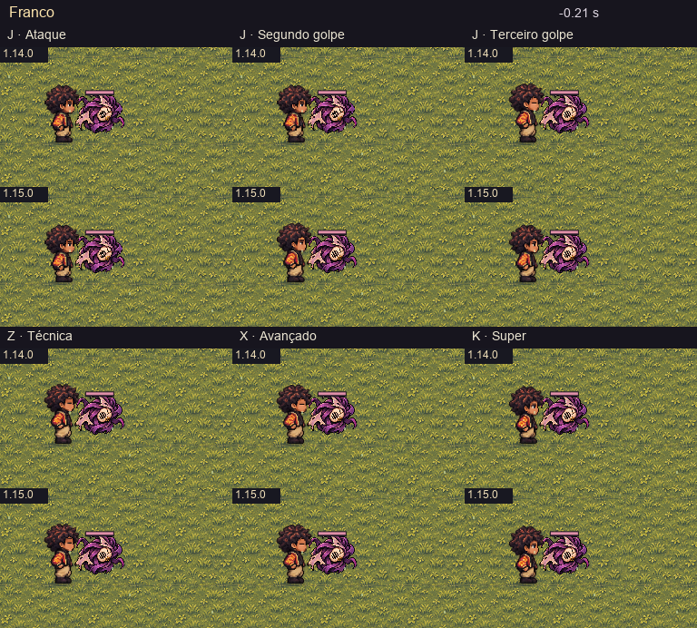
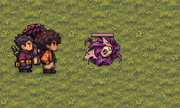

Cada ação aparece em duas versões. A 1.14.0 está acima da 1.15.0. O comando acontece em 0,00 s.

Comparar a flecha em voo · Ver os impactos dos seis personagens
Recorte do jogo em escala nativa e velocidade de combate.

Abrir a animação · Ver a saída, a passagem e o contato